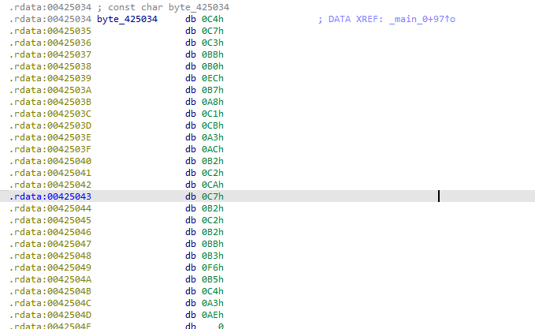

【BUUCTF】REVERSE-刷题记录-内涵的软件
题目信息
解题步骤
IDA 分析后，第一步在 main 函数中
我们接下来跟进main_0
1 | // 程序入口函数，标准main函数格式 |
1 | BE E0 C0 EB B3 F6 CF D6 B4 F0 B0 B8 BB B9 D3 D0 25 64 C3 EB A3 AC C7 EB C4 CD D0 C4 B5 C8 B4 FD A3 A1 0A |
1 | gbk_bytes = bytes.fromhex("BE E0 C0 EB B3 F6 CF D6 B4 F0 B0 B8 BB B9 D3 D0 25 64 C3 EB A3 AC C7 EB C4 CD D0 C4 B5 C8 B4 FD A3 A1 0A") |

1 | C4 C7 C3 BB B0 EC B7 A8 C1 CB A3 AC B2 C2 CA C7 B2 C2 B2 BB B3 F6 B5 C4 A3 AE |
1 | CA E4 C8 EB B4 ED CE F3 2C C3 BB D3 D0 CC E1 CA BE 2E |
实际上，flag一直在“头上”
v5 = "DBAPP{49d3c93df25caad81232130f3d2ebfad}"; // 硬编码的flag
flag{49d3c93df25caad81232130f3d2ebfad}
本博客所有文章除特别声明外，均采用 CC BY-NC-SA 4.0 许可协议。转载请注明来源 末心的小博客！
相关推荐

2025-10-26
【BUUCTF】REVERSE-刷题记录-easyre
题目信息 解题步骤先用DIE分析，发现是64位C程序 使用IDA分析： 也就是输入两个相同字符，就可以拿到flag 1flag{this_Is_a_EaSyRe}

2025-10-26
【BUUCTF】REVERSE-刷题记录-reverse1
题目信息 解题步骤 编译器为 MSVC 19.00，对应 Visual Studio 2015 或 2017 版本。 使用ida查看： 12345678for ( j = 0; ; ++j ){ v10 = j; if ( j > j_strlen(Str2) ) break; if ( Str2[j] == 111 ) Str2[j] = 48;} Str2 是一个字符串（全局变量或常量） 遍历 Str2，把所有字符 'o'（ASCII 111）替换成 '0'（ASCII 48） 条件是 j > j_strlen(Str2) 才跳出 → 实际是 j <= len 时继续 所以这是一个 字符串预处理：将 Str2 中的 o → 0 Str2 是“正确 flag”的模板，但被混淆了（用 o 代替 0） 12sub_1400111D1("input the flag:");sub_14001128F("%20s", Str1); sub_140...

2025-10-26
【BUUCTF】REVERSE-刷题记录-reverse2
题目信息 解题步骤使用DIE分析： 使用IDA分析 12v8 = __readfsqword(0x28u); // Canary，防栈溢出pid = fork(); // 关键！创建子进程 fork() 的行为回顾 fork() 创建一个子进程，复制父进程的内存空间 子进程返回 0 父进程返回子进程 PID 之后两个进程独立运行 所以： 12if (pid) { /* 父进程 */ } else { /* 子进程 */ } flag 字符串到底被谁修改了？看这段代码： 12345678else{ for ( i = 0; i <= strlen(flag); ++i ) { if ( flag[i] == 105 || flag[i] == 114 ) flag[i] = 49; }} 105 → 'i' 114 → 'r' 49 → '1' 所以：子进程把 flag 中的 &#...

2025-10-26
【BUUCTF】REVERSE-刷题记录-新年快乐
题目信息 解题步骤 发现应该是有upx壳 ida打开分析 代码的意义就是将HappyNewYear!存储到了Str2，然后和用户输入的Str1进行比对，所以得出实际上FLAG就是HappyNewYear!。 flag{HappyNewYear!}

2025-10-26
【BUUCTF】REVERSE-刷题记录-xor
题目信息 解题步骤 MacOS程序 1234567891011121314151617181920212223int __fastcall main(int argc, const char **argv, const char **envp){ int i; char __b[264]; // 缓冲区，用于存储用户输入 memset(__b, 0, 0x100u); // 清零缓冲区（256字节） printf("Input your flag:\n"); // 提示输入 get_line(__b, 256); // 获取输入（最多256字符） if ( strlen(__b) != 33 ) goto LABEL_7; // 长度必须为33（包含末尾的'\0'？不，strlen不包括'\0' → 所以是33个可见字符） for ( i = 1; i < 33; ++i ) __b[i]...

2025-10-27
【BUUCTF】REVERSE-刷题记录-reverse3
题目信息 解题步骤 main函数12345// attributes: thunkint __cdecl main(int argc, const char **argv, const char **envp){ return main_0(argc, argv, envp);} 先理解一下现在的代码: 1234567891011121314151617181920212223242526272829303132333435int __cdecl main_0(int argc, const char **argv, const char **envp){ size_t v3; // eax const char *v4; // eax size_t v5; // eax char v7; // [esp+0h] [ebp-188h] char v8; // [esp+0h] [ebp-188h] signed int j; // [esp+DCh] [ebp-ACh] int i; // [esp+E8h] [ebp-A0h] ...